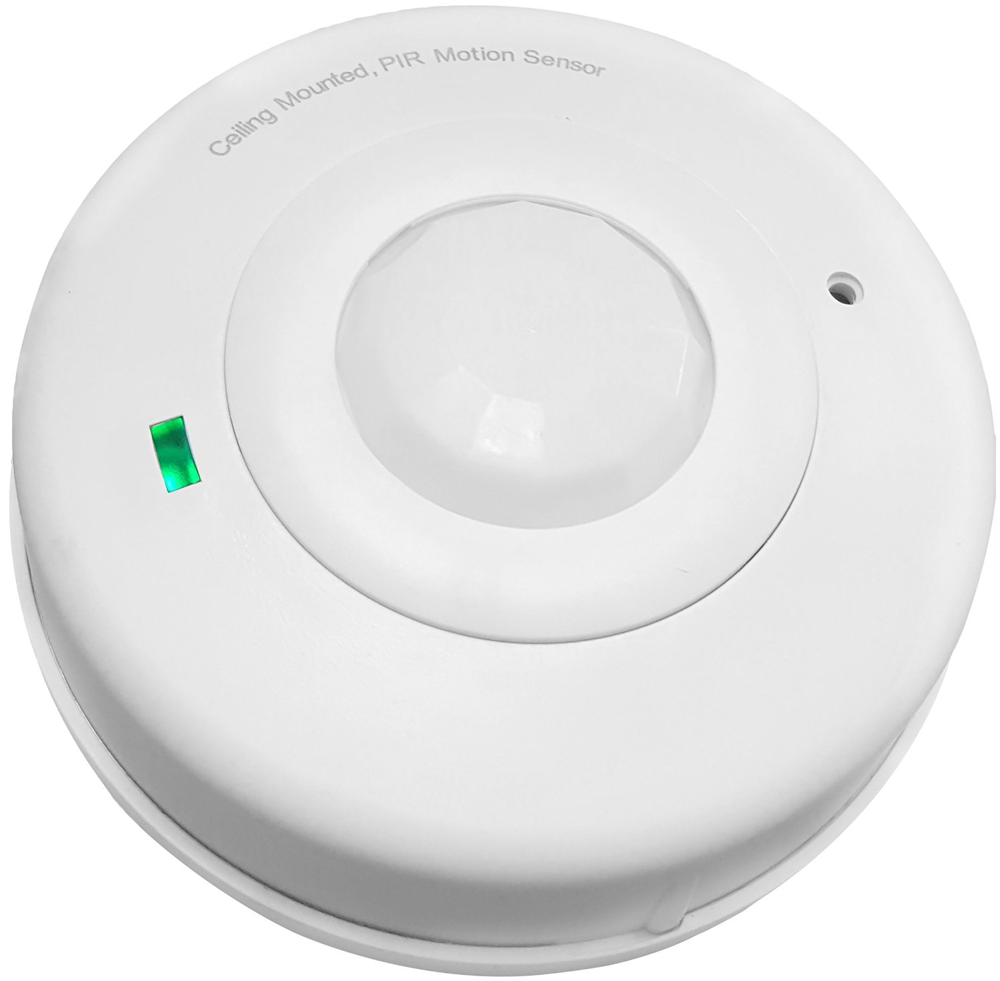
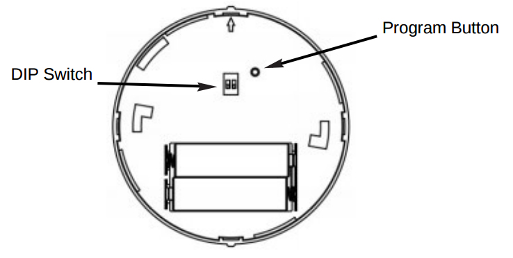

Enerwave ZWN-BPC Z-Wave Celling Occurpancy Motion Sensor PIR 360 degree sensor¶

Brief information¶
- ZWN-BPC Occupancy PIR sensor enabled with Z-Wave wireless control and Z-wave association function
- Detects motions, automatically control ON/OFF/Dimming/thermostat of 5 z-wave associated or group scene devices
- 360° motion detection, 600 sq.ft range, 4-position adjustable PIR sensitivity
- Long lasting battery life approximately 1 year with low battery detection; Sensor status can be monitored from PC, tablet or smartphone
- Battery-Powered; Low Power Detecting; Easy install, no need of wiring/drilling, 2 free AA batteries
How to add to VENUS app¶

- 1. Activation
- Press “Add button” (button ‘+’) in app
- Remove thin pull tab plastic
- Wait for VENUS scan & detect this device and inform in app
- 2. Reset then re-add
- Press “Add button” (button ‘+’) in app
- Press and release the program button located at the back of motion sensor
- Program LED will stay solid for 5 seconds and turn off when succeeds.
- Wait for VENUS scan & detect this device and inform in app
How to add/remove associated device(s) to¶
To add associated device(s) to this sensor, below action is required:
- Add z-wave notified-devices (which will be associated to this sensor) to VENUS
- Select Associate button and then select notified-device(s) to add
- Press and hold the program button for 1 second
- If successful, pop-up notification displays in VENUS app
To remove associated device(s) from this sensor, below action is required:
- Select Associate button and then select notified-device(s) to remove
- Pressing link key 3 times within 1.5 second
- If successful, pop-up notification displays in VENUS app
Configuration description¶
Delay time to clear motion
Available 0: Not send OFF trigger to clear motion 1 ~ 240: time in minutes 241 ~ 255: 15 seconds Default T.B.D